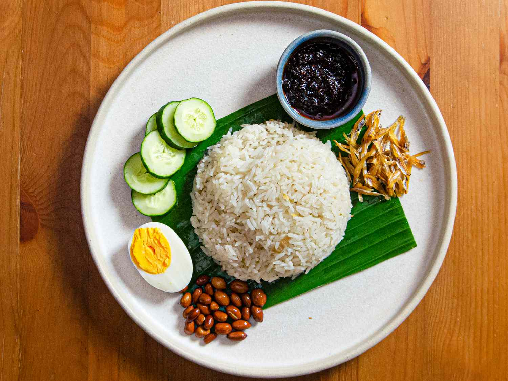

Nasi Lemak

Introduction
Nasi Lemak is a Malaysian word, and it translates to English as "Fat Rice". If I were to actually break down the dish to it's core, it is basically rice with a side serve of chilli.
The devil is in the details, however, and the rice is cooked with coconut cream/fat and the chilli paste is packed with flavour! Let's dig in.
Ingredients
- Rice
- Coconut Milk
- Sambal Paste
- Onions
- Anchovies
- Cucumber
Steps
- Wash the rice.
- Measure the milk thing and add it to the rice.
- Place the rice on heat and make it cook to perfection.
- Cut the onion to size and prep the ingredients by cutting to size.
- Fry onion until aromatic and soft, then add the sambal paste and fry to incorporate the flavours.
- In a separate pot, put water in to boil, add the eggs (in it's shell) and cook until it's how you like it.
- Once ready, assemble all on the plate and serve!